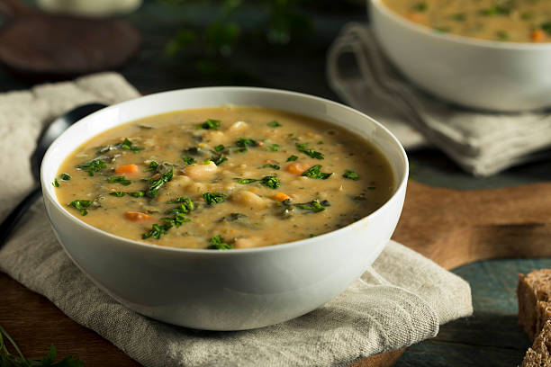

Home
Tuscan White Bean Soup

Make a cozy tuscan white bean soup featuring robust vegetables and savory Italian herbs
Ingredients
- White beans: 2 cans (15 oz each) Cannellini or Great Northern beans (drained and rinsed)
- Olive oil: 2 tablespoons
- Vegetables: 1 yellow onion, 2 carrots, 2 celery stalks (all diced)
- Broth: 4 cups vegetable or chicken broth
- Diced tomatoes: 1 can (14.5 oz)
- Greens: 2 cups chopped kale or fresh spinach
- Herbs & Seasoning: 1 teaspoon dried Italian seasoning, salt, pepper, and a pinch of red pepper flakes
Instructions:
- Sauté the Aromatics
- Heat the olive oil in a large pot or Dutch oven over medium heat.
- Add the diced onion, carrots, and celery, cooking for 6 to 8 minutes until softened. Stir in the minced garlic and cook for 1 minute until fragrant.
- Simmer the Base
- Pour in the broth, diced tomatoes (with their juices), white beans, and Italian seasoning.
- Bring the soup to a boil, then reduce the heat to low, cover, and let it simmer for 15 minutes to marry the flavors.
- Finish with Greens
- Stir in the kale or spinach and cook for 2 to 3 minutes until the greens are wilted.
- Season to taste with salt, pepper, and red pepper flakes. Ladle into bowls and serve alongside your chicken parmesan.